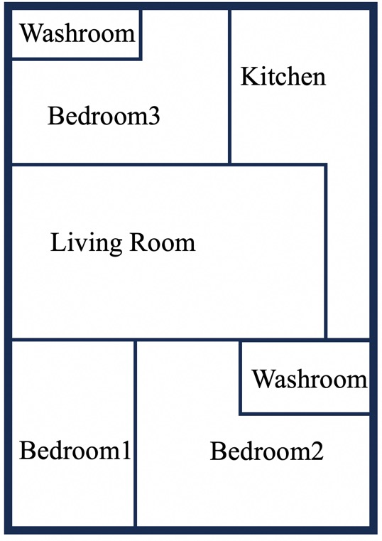

City Road Map
Question: The starting point ismarked in red, and the endpointis in yellow. Please find a path from the starting to the endpoint.
Answer: Start from the red point, move upwards to 7s, and then move to the right to L1...

Question: Observe the image. Are all the images identical?
Answer: No. Rationale: The cat in row 2 and column 4 is different ...
Visual Puzzle
Question: Summarize the pattern and select an option to fill ?
Answer: B. The sides of the polygon are decreasing...House Layout
Question: Does the smallest bedroom have a washroom?
Answer: No. Rationale: The smallest bedroom is BedRoom1, and it does not..
 Instrument Dashboard
Instrument Dashboard


Question: Today, I set off for another city 100 kilometers away. The clock shows my departure time, and the speedometer displays my car's speed. When will I arrive at the destination?
Answer: 10:00 AM. Rationale: Your departure time is 8:00 AM, and your car's speedometer shows 50 km/h. The distance is 100 km. Therefore, you need to spend two hours on the road, and you will arrive at destination at 10:00 AM.
Chart
Question: Summarize the pattern and select an option to fill ?
Answer: B. The sides of the polygon are decreasing... Rationale:In 2020, China's GDP was $14 trillion, while..Chart

Question: According to this flowchart, I input the numbers 2, 3, and 4. What is the final result?
Answer: 4. Rationale:This algorithm flowchart is designed to find the maximum of three numbersChart
Question: According to this flowchart, after completing the paper registration, what should I do next?
Answer: You should Pay Registration Fee.Chart
Question: According to this flowchart, after completing the paper registration, what should I do next?
Answer: You should Pay Registration Fee.Dataset
Overview
We focus on several common scenarios in our paper: statistical charts, tables, flowcharts, and simplified schematics, as well as typical real-life scenes: city road map, visual puzzle, house layout, and instrument dashboard. All scenarios are presented in the form of images, e.g., a screenshot of a table or a simulated city road map. We employ GPT-4-turbo to implement our synthesis process: idea proposal, code generation, and question-answer pair construction. We generate approximately 500-1000 instructions for each task, forming our mixed benchmark with a total of 7k testing instances. Additionally, considering the importance of chart and road map understanding, we also synthesize two training sets for two tasks, comprising 40k and 17k training instances, respectively. As shown in Table 1, we provide detailed statistics about our synthesized dataset.


Table 1: The statistics of our dataset, including eight tasks from work and life scenarios. All data were synthesized using our multi-modal self-instruct strategy.
Statistics
- Chart and Table:We categorize the generated questions into five types: OCR, chart caption, detailed perception (involving issues of position, quantity, layout), data extraction, and mathematical reasoning.
- City Map Navigation:When synthesizing maps, the LLM first sets the map size, and path complexity, i.e., walking direction, probability, and maximum walking steps. Based on the path complexity, we categorized all maps into five levels. Most samples are of medium difficulty or higher, with the statistical results
The distribution of different types of charts.
The number of questions in each category.
We categorize all city maps into five levels of complexity and presented their distribution.